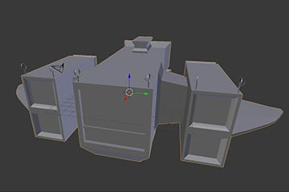
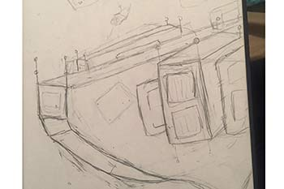
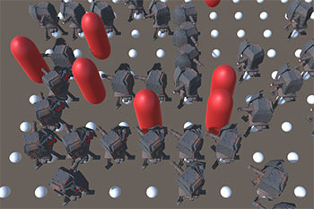
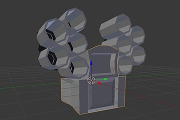
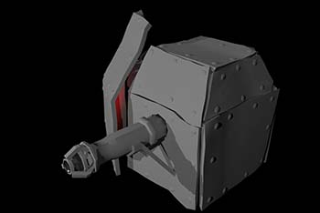
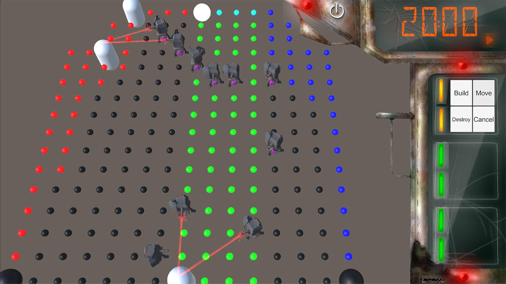

Project Altair was the third game that was worked on by the Game Development Association during Fall semester 2018. This time around we decided to do a classic tower defense game similar to games such as the games from the Balloon Tower Defense series.
Story
The main story behind Project Altair is that you and your crew are on a space freighter way past it's prime on its most recent delivery mission. While going to your destination space pirates/ aliens attack your Freighter. Now you and your crew need to slap together defenses on the hull of your ship to prevent the aliens from taking out the rest of your systems.
Environments
In terms of environment, the entire game was going to take place on our freighter. A freighter is a massive space cargo vehicle that transports valuable material across the galaxy and the freighter the crew is on its way past it's prime. Many of the original systems on board don't work, multiple large patches on the outside of the hull and many of the defense are more or less cobbled together on the fly.
Original concepts behind this ship came from artistic representations we found online of spaceship grave yards. From there, we drew a few different concepts for ships we would like to use in our actual game. This drawing of the freighter was designed by Lauren Butler. We decided we wanted a ship with either wings or thrusters in the back. so we could better separate the core systems of the ship.
Mechanics
When developing tower defenses there are many ways in which the game can be developed and played. For example, in balloon tower defense there are specifically defined paths and locations in which the enemies can walk as well as where towers can be placed. The Game Development Association did the other variation which is the entire environment is a potential path for the enemies and the player has to create their own path by placing turrets in a way to block the progressing enemies. By doing it like this, the player must use more advanced strategies in order to organize their defense not only to protect the emergency systems but do it in a way that’s efficient and cost effective. The current code that was used to accomplish this was designed by Miles Wood with the overall layout of the mapped points being designed by Lauren Butler.
When developing Project Altair There was a lot of artwork both 2D and 3D being developed for the game. This ranged from UI components designed to look both futuristic and rustic at the same time, to turret designs that looked like they were developed in a rush.
When planning the defenses for the game there was discussion of between one to two different variations. In a lot of tower defense games there tends to be towers that are designed for different tasks and in our case we decided to work on a fast and weak turret as well as a hard hitting heavy turret.
The heavy duty turret was originally designed by Dylan Plomondon and was designed to be a scrapped together missile launcher that would not only hit hard but cause splash damage(damage that is not as strong as on contact but still causes damage in certain size radius) to other enemies. Even though a model was created for the turret it didn't make the final game due to time constraints forcing us to use only one turret type.
The second turret and the one you will see within the working prototype of the game was the fast laser based turret designed by Emmanuel Marshall. This turret while not the strongest would fire a constant stream of damage to the enemy who was closest to one of the goal locations. The turret itself got a lot further in the development phase than the previous one including having textures as well a more refined design.
The original UI was designed by Aurora, (only name provided). It was design to look similar what we envisioned the standard screens inside the ship would look like.
There was more design created for different components made for project Altair but didn't as far into production as we would have hoped. These artworks are more likely to be presented on the artworks page of the website which is accessible here.
Struggle
This time around we actually didn't has as many issues developing the project. We actually came quite close to a full game. The only issue we did run into was time.... again which is understandable.
Result
Project Altair was the closest the Game Development Association came to a fully working game. It had many of the components of the game completed but not entirely stitched together. If our team decided to work on it a bit more we probably could have an entirely working version of the game out in no time.